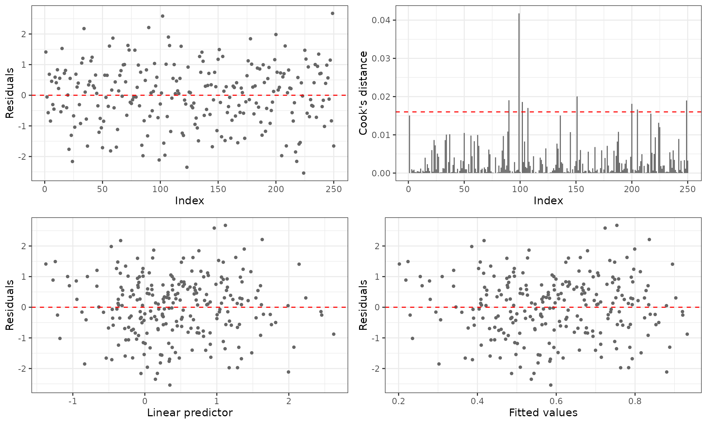
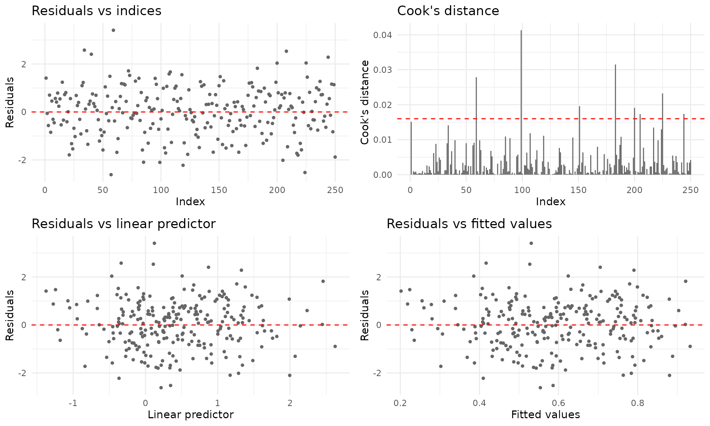
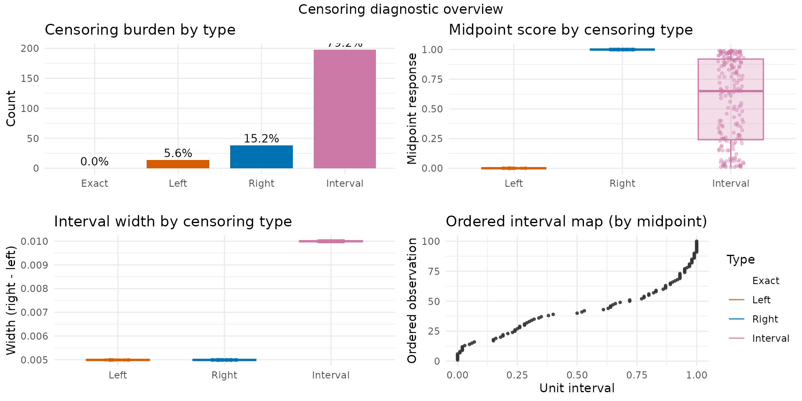
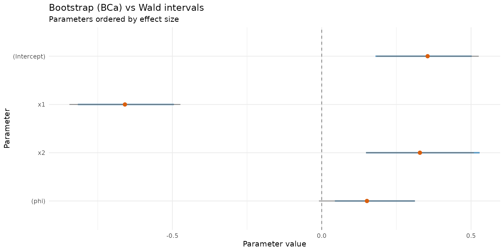
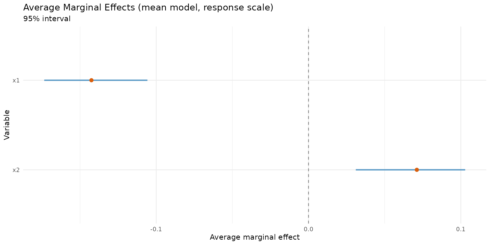

Overview
The betaregscale package provides maximum-likelihood estimation of beta regression models for responses derived from bounded rating scales. Common examples include pain intensity scales (NRS-11, NRS-21, NRS-101), Likert-type scales, product quality ratings, and any instrument whose response can be mapped to the open interval .
The key idea is that a discrete score recorded on a bounded scale carries measurement uncertainty inherent to the instrument. For instance, a pain score of on a 0–10 NRS is not an exact value but rather represents a range: after rescaling to , the observation is treated as interval-censored in . The package uses the beta distribution to model such data, building a complete likelihood that supports mixed censoring types within the same dataset.
Installation
# Development version from GitHub:
# install.packages("remotes")
remotes::install_github("evandeilton/betaregscale")Censoring types
The complete likelihood supports four censoring types, automatically
classified by brs_check():
| Type | Likelihood contribution | |
|---|---|---|
| 0 | Exact (uncensored) | |
| 1 | Left-censored () | |
| 2 | Right-censored () | |
| 3 | Interval-censored |
where and are the beta density and CDF, are the interval endpoints, and are the beta shape parameters derived from and via the chosen reparameterization.
Interval construction
Scale observations are mapped to with midpoint uncertainty intervals:
where
is the number of scale categories (ncuts) and
is the half-width (lim, default 0.5).
# Illustrate brs_check with a 0-10 NRS scale
y_example <- c(0, 3, 5, 7, 10)
cr <- brs_check(y_example, ncuts = 10)
kbl10(cr)| left | right | yt | y | delta |
|---|---|---|---|---|
| 0.00 | 0.05 | 0.0 | 0 | 1 |
| 0.25 | 0.35 | 0.3 | 3 | 3 |
| 0.45 | 0.55 | 0.5 | 5 | 3 |
| 0.65 | 0.75 | 0.7 | 7 | 3 |
| 0.95 | 1.00 | 1.0 | 10 | 2 |
The delta column shows that
is left-censored
(),
is right-censored
(),
and all interior values are interval-censored
().
Data preparation with brs_prep()
In practice, analysts may want to supply their own censoring
indicators or interval endpoints rather than relying on the automatic
classification of brs_check(). The brs_prep()
function provides a flexible, validated bridge between raw analyst data
and brs().
It supports four input modes:
Mode 1: Score only (automatic)
# Equivalent to brs_check - delta inferred from y
d1 <- data.frame(y = c(0, 3, 5, 7, 10), x1 = rnorm(5))
kbl10(brs_prep(d1, ncuts = 10))| left | right | yt | y | delta | x1 |
|---|---|---|---|---|---|
| 0.00 | 0.05 | 0.0 | 0 | 1 | -1.4000 |
| 0.25 | 0.35 | 0.3 | 3 | 3 | 0.2553 |
| 0.45 | 0.55 | 0.5 | 5 | 3 | -2.4373 |
| 0.65 | 0.75 | 0.7 | 7 | 3 | -0.0056 |
| 0.95 | 1.00 | 1.0 | 10 | 2 | 0.6216 |
Mode 2: Score + explicit censoring indicator
# Analyst specifies delta directly
d2 <- data.frame(
y = c(50, 0, 99, 50),
delta = c(0, 1, 2, 3),
x1 = rnorm(4)
)
kbl10(brs_prep(d2, ncuts = 100))| left | right | yt | y | delta | x1 |
|---|---|---|---|---|---|
| 0.500 | 0.500 | 0.50 | 50 | 0 | 1.1484 |
| 0.000 | 0.005 | 0.00 | 0 | 1 | -1.8218 |
| 0.985 | 1.000 | 0.99 | 99 | 2 | -0.2473 |
| 0.495 | 0.505 | 0.50 | 50 | 3 | -0.2442 |
Mode 3: Interval endpoints with NA patterns
When the analyst provides left and/or right
columns, censoring is inferred from the NA pattern:
d3 <- data.frame(
left = c(NA, 20, 30, NA),
right = c(5, NA, 45, NA),
y = c(NA, NA, NA, 50),
x1 = rnorm(4)
)
kbl10(brs_prep(d3, ncuts = 100))| left | right | yt | y | delta | x1 |
|---|---|---|---|---|---|
| 0.0 | 0.05 | 0.025 | NA | 1 | -0.2827 |
| 0.2 | 1.00 | 0.600 | NA | 2 | -0.5537 |
| 0.3 | 0.45 | 0.375 | NA | 3 | 0.6290 |
| 0.5 | 0.50 | 0.500 | 50 | 0 | 2.0650 |
Mode 4: Analyst-supplied intervals
When the analyst provides y, left, and
right simultaneously, their endpoints are used directly
(rescaled by
):
d4 <- data.frame(
y = c(50, 75),
left = c(48, 73),
right = c(52, 77),
x1 = rnorm(2)
)
kbl10(brs_prep(d4, ncuts = 100))| left | right | yt | y | delta | x1 |
|---|---|---|---|---|---|
| 0.48 | 0.52 | 0.50 | 50 | 3 | -1.6310 |
| 0.73 | 0.77 | 0.75 | 75 | 3 | 0.5124 |
Using brs_prep with brs()
Data processed by brs_prep() is automatically detected
by brs() - the internal brs_check() step is
skipped:
set.seed(42)
n <- 200
dat <- data.frame(x1 = rnorm(n), x2 = rnorm(n))
sim <- brs_sim(
formula = ~ x1 + x2, data = dat,
beta = c(0.2, -0.5, 0.3), phi = 0.3,
link = "logit", link_phi = "logit",
repar = 2
)
# Remove left, right, yt so brs_prep can rebuild them
prep <- brs_prep(sim[-c(1:3)], ncuts = 100)
fit_prep <- brs(y ~ x1 + x2,
data = prep, repar = 2,
link = "logit", link_phi = "logit"
)
summary(fit_prep, digits = 4)
#>
#> Call:
#> brs(formula = y ~ x1 + x2, data = prep, link = "logit", link_phi = "logit",
#> repar = 2)
#>
#> Quantile residuals:
#> Min 1Q Median 3Q Max
#> -3.3566 -0.7310 -0.0537 0.6635 2.9618
#>
#> Coefficients (mean model with logit link):
#> Estimate Std. Error z value Pr(>|z|)
#> (Intercept) 0.1946 0.0996 1.954 0.0507 .
#> x1 -0.5456 0.1079 -5.057 4.26e-07 ***
#> x2 0.2204 0.1067 2.066 0.0389 *
#> ---
#> Signif. codes: 0 '***' 0.001 '**' 0.01 '*' 0.05 '.' 0.1 ' ' 1
#>
#> Phi coefficients (precision model with logit link):
#> Estimate Std. Error z value Pr(>|z|)
#> (phi) 0.3326 0.0910 3.655 0.000257 ***
#> ---
#> Signif. codes: 0 '***' 0.001 '**' 0.01 '*' 0.05 '.' 0.1 ' ' 1
#> ---
#> Log-likelihood: -804.9904 on 4 Df | AIC: 1617.9809 | BIC: 1631.1741
#> Pseudo R-squared: 0.1372 (midpoint approx.; interpret with caution for heavily censored data)
#> Number of iterations: 28 (BFGS)
#> Censoring: 152 interval | 19 left | 29 rightExample 1: Fixed dispersion model
Simulating data
We simulate observations from a beta regression model with fixed dispersion, two covariates, and a logit link for the mean.
set.seed(4255)
n <- 250
dat <- data.frame(x1 = rnorm(n), x2 = rnorm(n))
sim_fixed <- brs_sim(
formula = ~ x1 + x2,
data = dat,
beta = c(0.3, -0.6, 0.4),
phi = 1 / 10,
link = "logit",
link_phi = "logit",
ncuts = 100,
repar = 2
)
kbl10(head(sim_fixed, 8))| left | right | yt | y | delta | x1 | x2 |
|---|---|---|---|---|---|---|
| 0.805 | 0.815 | 0.81 | 81 | 3 | 1.9510 | -1.3482 |
| 0.585 | 0.595 | 0.59 | 59 | 3 | 0.7725 | 1.2966 |
| 0.245 | 0.255 | 0.25 | 25 | 3 | 0.7264 | 1.1585 |
| 0.965 | 0.975 | 0.97 | 97 | 3 | 0.0487 | 0.6334 |
| 0.285 | 0.295 | 0.29 | 29 | 3 | -0.5445 | 0.1161 |
| 0.795 | 0.805 | 0.80 | 80 | 3 | 0.3600 | -0.2545 |
| 0.355 | 0.365 | 0.36 | 36 | 3 | 0.7136 | 0.7694 |
| 0.745 | 0.755 | 0.75 | 75 | 3 | -0.7274 | 1.0397 |
Each observation is centered in its interval. For example, a score of 67 on a 0–100 scale yields with the interval .
Fitting the model
fit_fixed <- brs(
y ~ x1 + x2,
data = sim_fixed,
link = "logit",
link_phi = "logit",
repar = 2
)
summary(fit_fixed)
#>
#> Call:
#> brs(formula = y ~ x1 + x2, data = sim_fixed, link = "logit",
#> link_phi = "logit", repar = 2)
#>
#> Quantile residuals:
#> Min 1Q Median 3Q Max
#> -2.8953 -0.6209 0.0858 0.6729 3.4008
#>
#> Coefficients (mean model with logit link):
#> Estimate Std. Error z value Pr(>|z|)
#> (Intercept) 0.35460 0.08730 4.062 4.87e-05 ***
#> x1 -0.65902 0.09482 -6.950 3.64e-12 ***
#> x2 0.32880 0.09221 3.566 0.000363 ***
#> ---
#> Signif. codes: 0 '***' 0.001 '**' 0.01 '*' 0.05 '.' 0.1 ' ' 1
#>
#> Phi coefficients (precision model with logit link):
#> Estimate Std. Error z value Pr(>|z|)
#> (phi) 0.15143 0.08202 1.846 0.0649 .
#> ---
#> Signif. codes: 0 '***' 0.001 '**' 0.01 '*' 0.05 '.' 0.1 ' ' 1
#> ---
#> Log-likelihood: -989.6966 on 4 Df | AIC: 1987.3932 | BIC: 2001.4790
#> Pseudo R-squared: 0.2264 (midpoint approx.; interpret with caution for heavily censored data)
#> Number of iterations: 29 (BFGS)
#> Censoring: 198 interval | 14 left | 38 rightThe summary output follows the betareg package style,
showing separate coefficient tables for the mean and precision
submodels, with Wald z-tests and
-values
based on the standard normal distribution.
Goodness of fit
kbl10(brs_gof(fit_fixed))| logLik | AIC | BIC | pseudo_r2 |
|---|---|---|---|
| -989.6966 | 1987.393 | 2001.479 | 0.2264 |
Comparing link functions
The package supports several link functions for the mean submodel. We can compare them using information criteria:
links <- c("logit", "probit", "cauchit", "cloglog")
fits <- lapply(setNames(links, links), function(lnk) {
brs(y ~ x1 + x2, data = sim_fixed, link = lnk, repar = 2)
})
# Estimates
est_table <- do.call(rbind, lapply(names(fits), function(lnk) {
e <- brs_est(fits[[lnk]])
e$link <- lnk
e
}))
kbl10(est_table)| variable | estimate | se | z_value | p_value | ci_lower | ci_upper | link |
|---|---|---|---|---|---|---|---|
| (Intercept) | 0.3546 | 0.0873 | 4.0619 | 0.0000 | 0.1835 | 0.5257 | logit |
| x1 | -0.6590 | 0.0948 | -6.9505 | 0.0000 | -0.8449 | -0.4732 | logit |
| x2 | 0.3288 | 0.0922 | 3.5657 | 0.0004 | 0.1481 | 0.5095 | logit |
| (phi) | 0.1514 | 0.0820 | 1.8463 | 0.0649 | -0.0093 | 0.3122 | logit |
| (Intercept) | 0.2180 | 0.0532 | 4.0969 | 0.0000 | 0.1137 | 0.3223 | probit |
| x1 | -0.3964 | 0.0548 | -7.2312 | 0.0000 | -0.5038 | -0.2890 | probit |
| x2 | 0.1955 | 0.0547 | 3.5745 | 0.0004 | 0.0883 | 0.3026 | probit |
| (phi) | 0.1539 | 0.0819 | 1.8794 | 0.0602 | -0.0066 | 0.3144 | probit |
| (Intercept) | 0.3062 | 0.0824 | 3.7164 | 0.0002 | 0.1447 | 0.4677 | cauchit |
| x1 | -0.6286 | 0.1100 | -5.7153 | 0.0000 | -0.8441 | -0.4130 | cauchit |
| logLik | AIC | BIC | pseudo_r2 | |
|---|---|---|---|---|
| logit | -989.6966 | 1987.393 | 2001.479 | 0.2264 |
| probit | -989.8231 | 1987.646 | 2001.732 | 0.2229 |
| cauchit | -989.7611 | 1987.522 | 2001.608 | 0.1804 |
| cloglog | -989.7198 | 1987.439 | 2001.525 | 0.1437 |
Residual diagnostics
The plot() method provides six diagnostic panels. By
default, the first four are shown:

For ggplot2 output (requires the ggplot2 package):
plot(fit_fixed, gg = TRUE)
Predictions
# Fitted means
kbl10(
data.frame(mu_hat = head(predict(fit_fixed, type = "response"))),
digits = 4
)| mu_hat |
|---|
| 0.2019 |
| 0.5675 |
| 0.5638 |
| 0.6297 |
| 0.6795 |
| 0.5084 |
# Conditional variance
kbl10(
data.frame(var_hat = head(predict(fit_fixed, type = "variance"))),
digits = 4
)| var_hat |
|---|
| 0.0867 |
| 0.1320 |
| 0.1323 |
| 0.1254 |
| 0.1171 |
| 0.1344 |
# Quantile predictions
kbl10(predict(fit_fixed, type = "quantile", at = c(0.10, 0.25, 0.5, 0.75, 0.90)))| q_0.1 | q_0.25 | q_0.5 | q_0.75 | q_0.9 |
|---|---|---|---|---|
| 0.0000 | 0.0006 | 0.0329 | 0.3130 | 0.7400 |
| 0.0335 | 0.2024 | 0.6326 | 0.9348 | 0.9943 |
| 0.0322 | 0.1974 | 0.6255 | 0.9323 | 0.9940 |
| 0.0624 | 0.2999 | 0.7476 | 0.9688 | 0.9982 |
| 0.0979 | 0.3959 | 0.8302 | 0.9855 | 0.9995 |
| 0.0168 | 0.1306 | 0.5167 | 0.8863 | 0.9865 |
| 0.0231 | 0.1596 | 0.5678 | 0.9096 | 0.9905 |
| 0.1981 | 0.5958 | 0.9385 | 0.9980 | 1.0000 |
| 0.1001 | 0.4013 | 0.8341 | 0.9862 | 0.9995 |
| 0.0088 | 0.0860 | 0.4218 | 0.8340 | 0.9755 |
Confidence intervals
Wald confidence intervals based on the asymptotic normal approximation:
kbl10(confint(fit_fixed))| 2.5 % | 97.5 % | |
|---|---|---|
| (Intercept) | 0.1835 | 0.5257 |
| x1 | -0.8449 | -0.4732 |
| x2 | 0.1481 | 0.5095 |
| (phi) | -0.0093 | 0.3122 |
kbl10(confint(fit_fixed, model = "mean"))| 2.5 % | 97.5 % | |
|---|---|---|
| (Intercept) | 0.1835 | 0.5257 |
| x1 | -0.8449 | -0.4732 |
| x2 | 0.1481 | 0.5095 |
Censoring structure
The brs_cens() function provides a visual and tabular
overview of the censoring types in the fitted model:
brs_cens(fit_fixed, gg = TRUE, inform = TRUE)
Example 2: Variable dispersion model
In many applications, the dispersion parameter
may depend on covariates. The package supports variable-dispersion
models using the Formula package notation:
y ~ x1 + x2 | z1 + z2, where the terms after |
define the linear predictor for
.
The same brs_sim() function is used for fixed and variable
dispersion; the second formula part activates the precision submodel in
simulation.
Simulating data
set.seed(2222)
n <- 250
dat_z <- data.frame(
x1 = rnorm(n),
x2 = rnorm(n),
x3 = rbinom(n, size = 1, prob = 0.5),
z1 = rnorm(n),
z2 = rnorm(n)
)
sim_var <- brs_sim(
formula = ~ x1 + x2 + x3 | z1 + z2,
data = dat_z,
beta = c(0.2, -0.6, 0.2, 0.2),
zeta = c(0.2, -0.8, 0.6),
link = "logit",
link_phi = "logit",
ncuts = 100,
repar = 2
)
kbl10(head(sim_var, 10))| left | right | yt | y | delta | x1 | x2 | x3 | z1 | z2 |
|---|---|---|---|---|---|---|---|---|---|
| 0.000 | 0.005 | 0.00 | 0 | 1 | -0.3381 | 0.7980 | 1 | -0.1859 | 1.7165 |
| 0.000 | 0.005 | 0.00 | 0 | 1 | 0.9392 | -2.2067 | 0 | -1.1473 | 0.8539 |
| 0.985 | 0.995 | 0.99 | 99 | 3 | 1.7377 | 0.0134 | 0 | 0.3364 | 0.9417 |
| 0.535 | 0.545 | 0.54 | 54 | 3 | 0.6963 | 0.2765 | 1 | 2.1178 | 0.1317 |
| 0.515 | 0.525 | 0.52 | 52 | 3 | 0.4623 | -0.8707 | 1 | 0.5450 | -0.3795 |
| 0.005 | 0.015 | 0.01 | 1 | 3 | -0.3151 | -1.0969 | 1 | -0.4672 | -0.8259 |
| 0.005 | 0.015 | 0.01 | 1 | 3 | 0.1927 | 1.8391 | 0 | -1.2001 | -0.1784 |
| 0.035 | 0.045 | 0.04 | 4 | 3 | 1.1307 | -1.3548 | 0 | -0.6740 | -0.9092 |
| 0.315 | 0.325 | 0.32 | 32 | 3 | 1.9764 | 0.6912 | 1 | 0.9831 | 0.0286 |
| 0.825 | 0.835 | 0.83 | 83 | 3 | 1.2071 | 0.2571 | 0 | 0.6295 | -0.2415 |
Fitting the model
fit_var <- brs(
y ~ x1 + x2 | z1,
data = sim_var,
link = "logit",
link_phi = "logit",
repar = 2
)
summary(fit_var)
#>
#> Call:
#> brs(formula = y ~ x1 + x2 | z1, data = sim_var, link = "logit",
#> link_phi = "logit", repar = 2)
#>
#> Quantile residuals:
#> Min 1Q Median 3Q Max
#> -3.2736 -0.5585 0.0259 0.6191 2.5197
#>
#> Coefficients (mean model with logit link):
#> Estimate Std. Error z value Pr(>|z|)
#> (Intercept) 0.31884 0.08541 3.733 0.000189 ***
#> x1 -0.48246 0.08961 -5.384 7.28e-08 ***
#> x2 0.23905 0.08270 2.890 0.003847 **
#> ---
#> Signif. codes: 0 '***' 0.001 '**' 0.01 '*' 0.05 '.' 0.1 ' ' 1
#>
#> Phi coefficients (precision model with logit link):
#> Estimate Std. Error z value Pr(>|z|)
#> (Intercept) 0.33336 0.08621 3.867 0.00011 ***
#> z1 -0.81256 0.09204 -8.829 < 2e-16 ***
#> ---
#> Signif. codes: 0 '***' 0.001 '**' 0.01 '*' 0.05 '.' 0.1 ' ' 1
#> ---
#> Log-likelihood: -936.0499 on 5 Df | AIC: 1882.0998 | BIC: 1899.7071
#> Pseudo R-squared: 0.1164 (midpoint approx.; interpret with caution for heavily censored data)
#> Number of iterations: 34 (BFGS)
#> Censoring: 181 interval | 23 left | 46 rightNotice the (phi)_ prefix in the precision coefficient
names, following the betareg convention.
Accessing coefficients by submodel
# Full parameter vector
round(coef(fit_var), 4)
#> (Intercept) x1 x2 (phi)_(Intercept)
#> 0.3188 -0.4825 0.2390 0.3334
#> (phi)_z1
#> -0.8126
# Mean submodel only
round(coef(fit_var, model = "mean"), 4)
#> (Intercept) x1 x2
#> 0.3188 -0.4825 0.2390
# Precision submodel only
round(coef(fit_var, model = "precision"), 4)
#> (phi)_(Intercept) (phi)_z1
#> 0.3334 -0.8126
# Variance-covariance matrix for the mean submodel
kbl10(vcov(fit_var, model = "mean"))| (Intercept) | x1 | x2 | |
|---|---|---|---|
| (Intercept) | 0.0073 | -3e-04 | 0.0002 |
| x1 | -0.0003 | 8e-03 | 0.0001 |
| x2 | 0.0002 | 1e-04 | 0.0068 |
Comparing link functions (variable dispersion)
links <- c("logit", "probit", "cauchit", "cloglog")
fits_var <- lapply(setNames(links, links), function(lnk) {
brs(y ~ x1 + x2 | z1, data = sim_var, link = lnk, repar = 2)
})
# Estimates
est_var <- do.call(rbind, lapply(names(fits_var), function(lnk) {
e <- brs_est(fits_var[[lnk]])
e$link <- lnk
e
}))
kbl10(est_var)| variable | estimate | se | z_value | p_value | ci_lower | ci_upper | link |
|---|---|---|---|---|---|---|---|
| (Intercept) | 0.3188 | 0.0854 | 3.7332 | 0.0002 | 0.1514 | 0.4862 | logit |
| x1 | -0.4825 | 0.0896 | -5.3841 | 0.0000 | -0.6581 | -0.3068 | logit |
| x2 | 0.2390 | 0.0827 | 2.8904 | 0.0038 | 0.0770 | 0.4011 | logit |
| (phi)_(Intercept) | 0.3334 | 0.0862 | 3.8668 | 0.0001 | 0.1644 | 0.5023 | logit |
| (phi)_z1 | -0.8126 | 0.0920 | -8.8286 | 0.0000 | -0.9930 | -0.6322 | logit |
| (Intercept) | 0.1972 | 0.0524 | 3.7601 | 0.0002 | 0.0944 | 0.3000 | probit |
| x1 | -0.2980 | 0.0541 | -5.5038 | 0.0000 | -0.4041 | -0.1919 | probit |
| x2 | 0.1477 | 0.0505 | 2.9237 | 0.0035 | 0.0487 | 0.2467 | probit |
| (phi)_(Intercept) | 0.3326 | 0.0862 | 3.8571 | 0.0001 | 0.1636 | 0.5015 | probit |
| (phi)_z1 | -0.8131 | 0.0920 | -8.8379 | 0.0000 | -0.9934 | -0.6327 | probit |
| logLik | AIC | BIC | pseudo_r2 | |
|---|---|---|---|---|
| logit | -936.0499 | 1882.100 | 1899.707 | 0.1164 |
| probit | -935.9539 | 1881.908 | 1899.515 | 0.1211 |
| cauchit | -936.7522 | 1883.504 | 1901.112 | 0.0957 |
| cloglog | -935.6783 | 1881.357 | 1898.964 | 0.0667 |
Advanced analyst functions
The package includes analyst-facing helpers for uncertainty quantification, effect interpretation, score-scale communication, and predictive validation.
Parametric bootstrap confidence intervals
set.seed(101)
boot_ci <- brs_bootstrap(
fit_fixed,
R = 30,
level = 0.95,
ci_type = "bca",
keep_draws = TRUE
)
kbl10(head(boot_ci, 10))| parameter | estimate | se_boot | ci_lower | ci_upper | mcse_lower | mcse_upper | wald_lower | wald_upper | level |
|---|---|---|---|---|---|---|---|---|---|
| (Intercept) | 0.3546 | 0.0982 | 0.1799 | 0.5024 | 0.0318 | 0.0217 | 0.1835 | 0.5257 | 0.95 |
| x1 | -0.6590 | 0.1044 | -0.8166 | -0.4950 | 0.0227 | 0.0378 | -0.8449 | -0.4732 | 0.95 |
| x2 | 0.3288 | 0.1088 | 0.1484 | 0.5288 | 0.0259 | 0.0321 | 0.1481 | 0.5095 | 0.95 |
| (phi) | 0.1514 | 0.0913 | 0.0439 | 0.3120 | 0.0113 | 0.0194 | -0.0093 | 0.3122 | 0.95 |
autoplot.brs_bootstrap(
boot_ci,
type = "ci_forest",
title = "Bootstrap (BCa) vs Wald intervals"
)
Average marginal effects (AME)
set.seed(202)
ame <- brs_marginaleffects(
fit_fixed,
model = "mean",
type = "response",
interval = TRUE,
n_sim = 60,
keep_draws = TRUE
)
kbl10(ame)| variable | ame | std.error | ci.lower | ci.upper | model | type | n |
|---|---|---|---|---|---|---|---|
| x1 | -0.1425 | 0.0170 | -0.1735 | -0.1058 | mean | response | 250 |
| x2 | 0.0711 | 0.0203 | 0.0310 | 0.1029 | mean | response | 250 |
autoplot.brs_marginaleffects(ame, type = "forest")
Score probabilities on the original scale
prob_scores <- brs_predict_scoreprob(fit_fixed, scores = 0:10)
kbl10(prob_scores[1:6, 1:6])| score_0 | score_1 | score_2 | score_3 | score_4 | score_5 |
|---|---|---|---|---|---|
| 0.3600 | 0.0758 | 0.0406 | 0.0289 | 0.0228 | 0.0190 |
| 0.0393 | 0.0280 | 0.0192 | 0.0157 | 0.0136 | 0.0122 |
| 0.0403 | 0.0285 | 0.0195 | 0.0159 | 0.0137 | 0.0123 |
| 0.0252 | 0.0205 | 0.0147 | 0.0122 | 0.0108 | 0.0098 |
| 0.0171 | 0.0155 | 0.0115 | 0.0097 | 0.0087 | 0.0080 |
| 0.0587 | 0.0363 | 0.0240 | 0.0191 | 0.0163 | 0.0145 |
kbl10(
data.frame(row_sum = rowSums(prob_scores)[1:6]),
digits = 4
)| row_sum |
|---|
| 0.6136 |
| 0.1774 |
| 0.1802 |
| 0.1340 |
| 0.1044 |
| 0.2261 |
Repeated k-fold cross-validation
set.seed(303) # For cross-validation reproducibility
cv_res <- brs_cv(
y ~ x1 + x2,
data = sim_fixed,
k = 5,
repeats = 2,
repar = 2,
)
kbl10(cv_res)| repeat | fold | n_train | n_test | log_score | rmse_yt | mae_yt | converged | error |
|---|---|---|---|---|---|---|---|---|
| 1 | 1 | 200 | 50 | -4.0896 | 0.3338 | 0.2852 | TRUE | NA |
| 1 | 2 | 200 | 50 | -4.0065 | 0.3482 | 0.3080 | TRUE | NA |
| 1 | 3 | 200 | 50 | -3.7595 | 0.3069 | 0.2693 | TRUE | NA |
| 1 | 4 | 200 | 50 | -3.9121 | 0.3660 | 0.3281 | TRUE | NA |
| 1 | 5 | 200 | 50 | -4.0921 | 0.3834 | 0.3422 | TRUE | NA |
| 2 | 1 | 200 | 50 | -4.2336 | 0.3669 | 0.3191 | TRUE | NA |
| 2 | 2 | 200 | 50 | -3.8826 | 0.3231 | 0.2829 | TRUE | NA |
| 2 | 3 | 200 | 50 | -3.8884 | 0.3151 | 0.2787 | TRUE | NA |
| 2 | 4 | 200 | 50 | -4.0835 | 0.3745 | 0.3272 | TRUE | NA |
| 2 | 5 | 200 | 50 | -3.8069 | 0.3697 | 0.3366 | TRUE | NA |
kbl10(
data.frame(
metric = c("log_score", "rmse_yt", "mae_yt"),
mean = c(
mean(cv_res$log_score, na.rm = TRUE),
mean(cv_res$rmse_yt, na.rm = TRUE),
mean(cv_res$mae_yt, na.rm = TRUE)
)
),
digits = 4
)| metric | mean |
|---|---|
| log_score | -3.9755 |
| rmse_yt | 0.3488 |
| mae_yt | 0.3077 |
S3 methods reference
The following standard S3 methods are available for objects of class
"brs":
| Method | Description |
|---|---|
print() |
Compact display of call and coefficients |
summary() |
Detailed output with Wald tests and goodness-of-fit |
coef(model=) |
Extract coefficients (full, mean, or precision) |
vcov(model=) |
Variance-covariance matrix (full, mean, or precision) |
confint(model=) |
Wald confidence intervals |
logLik() |
Log-likelihood value |
AIC(), BIC()
|
Information criteria |
nobs() |
Number of observations |
formula() |
Model formula |
model.matrix(model=) |
Design matrix (mean or precision) |
fitted() |
Fitted mean values |
residuals(type=) |
Residuals: response, pearson, rqr, weighted, sweighted |
predict(type=) |
Predictions: response, link, precision, variance, quantile |
plot(gg=) |
Diagnostic plots (base R or ggplot2) |
Reparameterizations
The package supports three reparameterizations of the beta
distribution, controlled by the repar argument:
Direct (repar = 0): Shape parameters
and
are used directly. This is rarely used in practice.
Precision (repar = 1, Ferrari &
Cribari-Neto, 2004): The mean
and precision
yield
and
.
Higher
means less variability.
Mean–variance (repar = 2): The mean
and dispersion
yield
and
.
Here
acts as a coefficient of variation: smaller
means less variability.
References
Ferrari, S. L. P., and Cribari-Neto, F. (2004). Beta regression for modelling rates and proportions. Journal of Applied Statistics, 31(7), 799–815. DOI: 10.1080/0266476042000214501. Validated online via: https://doi.org/10.1080/0266476042000214501.
Smithson, M., and Verkuilen, J. (2006). A better lemon squeezer? Maximum-likelihood regression with beta-distributed dependent variables. Psychological Methods, 11(1), 54–71. DOI: 10.1037/1082-989X.11.1.54. Validated online via: https://doi.org/10.1037/1082-989X.11.1.54.
Hawker, G. A., Mian, S., Kendzerska, T., and French, M. (2011). Measures of adult pain: Visual Analog Scale for Pain (VAS Pain), Numeric Rating Scale for Pain (NRS Pain), McGill Pain Questionnaire (MPQ), Short-Form McGill Pain Questionnaire (SF-MPQ), Chronic Pain Grade Scale (CPGS), Short Form-36 Bodily Pain Scale (SF-36 BPS), and Measure of Intermittent and Constant Osteoarthritis Pain (ICOAP). Arthritis Care and Research, 63(S11), S240–S252. DOI: 10.1002/acr.20543. Validated online via: https://doi.org/10.1002/acr.20543.
Hjermstad, M. J., Fayers, P. M., Haugen, D. F., et al. (2011). Studies comparing numerical rating scales, verbal rating scales, and visual analogue scales for assessment of pain intensity in adults: a systematic literature review. Journal of Pain and Symptom Management, 41(6), 1073–1093. DOI: 10.1016/j.jpainsymman.2010.08.016. Validated online via: https://doi.org/10.1016/j.jpainsymman.2010.08.016.